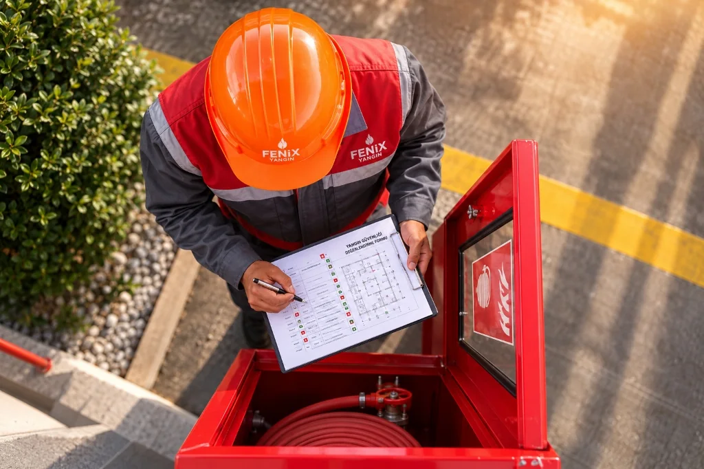

Yangın Sınıfları Nelerdir? A, B, C, D, F Sınıfları ve Söndürme Yöntemleri
TS EN 2 standardına göre yangınlar A (katı), B (sıvı), C (gaz), D (metal) ve F (pişirme yağı) olmak üzere 5 resmi sınıfa ayrılır. Elektrik yangınları (eski adıyla E sınıfı) bağımsız bir yangın sınıfı olmayıp, elektriğin kesilmesiyle A veya C sınıfına dönüşen yangın ortamı tehlikesidir.
Yanlış yangın söndürme ajanı kullanımı (örneğin kızgın yağ veya hafif metal yangınlarına su sıkılması) patlamalara ve alevin hızla yayılmasına yol açar. Bu nedenle her tehlike sınıfına uygun söndürme maddesi seçimi yasal ve mühendislik bir zorunluluktur.

Yangın Sınıfları ve Kullanılacak Söndürücü Türleri Karşılaştırma Tablosu
Türkiye'de yürürlükte olan TS EN 2:2004 standardı ve Binaların Yangından Korunması Hakkında Yönetmelik hükümlerine göre temel yangın sınıfları, yakıt cinsleri, uygun söndürücü ajanlar ve kaçınılması gereken müdahaleler aşağıda özetlenmiştir:
| Sınıf | Yanıcı Madde Türü | Örnek Yakıtlar | Onaylı Söndürücü Ajan / Sistem | Kesinlikle Kullanılmaması Gerekenler |
|---|---|---|---|---|
| A | Katı Maddeler (Organik, kor bırakan) |
Ahşap, kağıt, tekstil, kömür, karton, saman | Su sisi, köpük, ABC kuru kimyevi toz, temiz gazlar | Sadece boğma etkisi yapan yetersiz gaz konsantrasyonu (derin kor riski) |
| B | Sıvı Maddeler (Sıvı ve eriyebilir katılar) |
Benzin, motorin, solvent, tiner, alkol, vernik, parafin | FM-200, Novec 1230, CO2, mekanik köpük, BC/ABC toz | Doğrudan tazyikli su jeti (sıvıyı sıçratarak alevi çevreye yayar) |
| C | Gaz Maddeler (Basınçlı/sıvılaştırılmış) |
Doğalgaz (metan), LPG (propan/bütan), hidrojen, asetilen | Öncelikle gaz vanasını kesmek; kuru toz, temiz gazlar | Gaz akışı kesilmeden alevin söndürülmesi (patlama ve gaz birikimi riski) |
| D | Yanıcı Metaller (Hafif metaller ve talaşlar) |
Magnezyum, alüminyum tozu, lityum, sodyum, potasyum | Özel D tipi mineral kuru tozlar (fluxing tozu), kuru dökme kum | Su, köpük, CO2, halokarbonlar (hidrojen açığa çıkararak termal patlama yapar) |
| ELEKTRİK | Elektrik Tehlikesi (Enerjili donanımlar) |
Trafo, jeneratör, pano, UPS, server kabineti, kablo tavaları | Pano içi mikro söndürme, trafo yangın söndürme, FM200, Novec 1230, CO2 | İletken su jeti ve köpük (elektrik çarpması ve kalıcı donanım hasarı) |
| F | Pişirme Yağları (Bitkisel/hayvansal yağlar) |
Endüstriyel fritöz yağları, katı/sıvı yemek yağları, gres | UL 300 onaylı ıslak kimyasal davlumbaz sistemleri | Su dökmek (anında buhar genleşmesi ve alev topu patlaması) |
2. TS EN 2 (Avrupa) ile NFPA 10 (ABD) Sınıflandırma Farkları
Uluslararası projelerde ve teknik şartnamelerde en sık karşılaşılan hatalardan biri, Avrupa normu (TS EN 2) ile Amerikan normu (NFPA 10) arasındaki sınıflandırma ve harflendirme farklarının karıştırılmasıdır:
| Yangın Tehlikesi / Yakıt | Avrupa & Türkiye (TS EN 2) | Amerika Birleşik Devletleri (NFPA 10) | Teknik Ayrım Nedeni |
|---|---|---|---|
| Katı maddeler (ahşap, kağıt) | Sınıf A | Class A | Her iki standartta da ortaktır. |
| Yanıcı sıvılar (benzin, solvent) | Sınıf B | Class B | Her iki standartta da ortaktır. |
| Yanıcı gazlar (LPG, doğalgaz) | Sınıf C | Class B | NFPA yanıcı gazları sıvı yakıtlarla birlikte Class B altında değerlendirir. |
| Yanıcı metaller (magnezyum, lityum) | Sınıf D | Class D | Her iki standartta da özel metal tozları şarttır. |
| Enerjili elektrik donanımı | Elektrik Tehlikesi (Ayrı harf sınıfı yoktur) | Class C | TS EN 2 elektriği yakıt değil tutuşma kaynağı sayar; NFPA harf sınıfı verir. |
| Pişirme yağları (fritöz, davlumbaz) | Sınıf F | Class K (Kitchen) | EN 2'ye 2004 yılında F olarak eklenmiş, NFPA'de Kitchen (K) olarak adlandırılmıştır. |
3. Yangın Sınıflarının Ayrıntılı Analizi ve Mühendislik Yaklaşımı
A Sınıfı Yangınlar: Katı Madde Yangınları (Odun, Kömür, Kâğıt, Tekstil)
A sınıfı yangınlar; ahşap, kömür, selüloz, kağıt, kauçuk ve tekstil gibi organik kökenli, karbonlu katı yanıcıların oluşturduğu yangınlardır. Bu yangınların en temel özelliği, alevli yanmanın yanı sıra iç kısımlarda akkor (kor) oluşumu ile için için yanmaya devam etmesidir.
- Söndürme Mekanizması: Temel mekanizma soğutmadır. Yanan maddenin tutuşma sıcaklığının altına düşürülmesi gerekir.
- Söndürücü Seçimi: Su sisi, mekanik köpük ve ABC kuru kimyevi tozlar etkilidir. Su sisi, yüksek ısı soğurma kapasitesiyle kor halindeki katı yakıtı hızla söndürür.
- Sabit Sistemler: Arşiv, kütüphane veya müze gibi katı yakıt içeren ancak suyun kalıcı hasar vereceği alanlarda Novec 1230 ve FM-200 temiz gazlı sistemleri A sınıfı tasarım konsantrasyonunda (TS EN 15004-1) projelendirilir.
B Sınıfı Yangınlar: Sıvı Yanıcı Madde Yangınları (Benzin, Tiner, Boya, Alkol)
B sınıfı yangınlar; benzin, tiner, boya, mazot, solvent, alkol ve eriyebilir katıların (parafin, plastik reçineler) yangınlarıdır. Sıvıların kendisi değil, yüzeyden buharlaşan gaz fazı yanar.
- Söndürme Mekanizması: Oksijenin sıvı yüzeyiyle temasını kesmek (boğma) ve kimyasal zincir reaksiyonu kırmaktır.
- Polar Solvent Ayrımı: Hidrokarbon bazlı (apolar) sıvılarda standart AFFF köpükleri çalışırken; alkol, aseton ve ester gibi suyla karışabilen polar solventlerde standart köpük anında parçalanır. Bu alanlarda alkole dayanıklı polimerik film oluşturan AR-AFFF (Alcohol Resistant) köpükler zorunludur.
- Gazlı Söndürme: Kapalı hacimlerde sıvı tankları, solvent depoları ve boyahanelerde Karbondioksit (CO2) veya temiz gazlı hacimsel söndürme sistemleri tercih edilir.
C Sınıfı Yangınlar: Gaz Yangınları (LPG, Doğalgaz, Metan, Propan)
C sınıfı yangınlar; LPG, doğalgaz (metan), hidrojen, asetilen, bütan ve propan gibi basınç altında depolanan veya iletilen yanıcı gazların sızıntısı sonucu ortaya çıkan yangınlardır.
- Altın Kural — Gazı Kesmek: Bir gaz yangınına müdahalede ilk adım alevi söndürmek değil, ana vanayı kapatarak yakıt akışını kesmektir.
- Patlama Tehlikesi: Eğer gaz kaçağı kesilmeden alev söndürülürse, ortama sızan gaz hava ile patlayıcı karışım (LEL - UEL limitleri) oluşturarak kıvılcım anında çok daha yıkıcı bir hacimsel patlamaya (UVCE) yol açar.
D Sınıfı Yangınlar: Yanıcı Metal Yangınları (Magnezyum, Alüminyum, Titanyum, Lityum)
D sınıfı yangınlar; magnezyum, alüminyum talaşı, titanyum, lityum, sodyum ve zirkonyum gibi hafif ve alkali metallerin yüksek sıcaklıkta yanmasıdır. Sıcaklık sıklıkla 2.000°C ile 3.000°C arasına ulaşır.
- Su ve CO2 Felaketi: 2.000°C üzerindeki kızgın metale su temas ettiğinde, su molekülü hidrojen ve oksijene parçalanır. Açığa çıkan serbest hidrojen anında alev topu patlamasına yol açar. CO2 gazı ise metal tarafından indirgenerek karbonmonoksit üretir.
- Söndürme Metodu: Sadece sodyum klorür, baryum klorür veya grafit esaslı özel D sınıfı kuru kimyevi tozlar kullanılır. Bu tozlar metal yüzeyinde eriyerek hava geçirmeyen bir kabuk tabakası oluşturur.
Lityum İyon Batarya Yangınları ve Termal Kaçak (Thermal Runaway): Günümüzde elektrikli araçlarda, enerji depolama sistemlerinde (BESS) ve veri merkezlerinin UPS bataryalarında kullanılan lityum iyon piller, geleneksel D sınıfı metal yangınlarından farklı bir termal kaçak dinamiğine sahiptir. Hücre içi kısa devre sonucu sıcaklık kontrolsüzce 800°C üzerine çıkar ve batarya kendi oksijenini kimyasal olarak üretir. Standart D tozu batarya hücresinin içine nüfuz edemez. Bu alanlarda özel batarya daldırma/soğutma ve gazlı erken baskılama sistemleri uygulanmalıdır. Kapsamlı mühendislik kılavuzumuz için lityum batarya yangın söndürme sistemleri sayfamıza göz atabilirsiniz.
E Sınıfı Yangın Var mıdır? Elektrik Yangınları ve TS EN 2 Standart Yaklaşımı
Yangın güvenliği sektöründe ve halk arasında en sık karşılaşılan kavram yanılgılarından biri "E Sınıfı Yangın" tanımıdır. Uluslararası standardizasyon kuruluşu CEN ve Türk Standartları Enstitüsü tarafından yayınlanan TS EN 2 standardında resmi olarak "E Sınıfı" şeklinde bir yangın kategorisi bulunmamaktadır. Bunun mühendislik ve fizikokimyasal temeli son derece açıktır: Elektrik akımı kendi başına yanan bir yakıt (madde) değil, yangını başlatan veya besleyen bir tutuşma kaynağı ve elektrik çarpması riski oluşturan ortam tehlikesidir (electrical hazard).
Elektrikli bir cihazda (örneğin bir şalt panosu, UPS kabini veya transformatörde) yangın çıktığında, elektriğin enerjisi kesildiği anda geriye kalan yanıcı maddeler kablo izolasyonunu oluşturan PVC/XLPE polimerler (A sınıfı katı madde) veya trafo soğutma yağıdır (B sınıfı yanıcı sıvı). Dolayısıyla yangının kimyasal karakteri elektriğin kendisinden değil, çevresindeki malzemeden kaynaklanır.
Enerji altındaki elektrik tesisatlarına müdahalede kullanılacak söndürme cihazlarının dielektrik yalıtkanlığı TS EN 3-7 Madde 8.2 gereğince 35.000 Volt (35 kV) gerilim altında test edilerek onaylanmalıdır. Elektrik iletkenliği olan su jeti ve standart mekanik köpükler, müdahale eden personele ölümcül elektrik şoku iletme riski taşıdığı için enerjili alanlarda kesinlikle yasaktır.
Elektrik yangınlarının yönetiminde ve kritik IT donanımlarının korunmasında üç temel gazlı söndürme teknolojisi ön plana çıkar:
- FM-200 (HFC-227ea): Elektriksel iletkenliği sıfır olan sentetik halokarbon gazıdır. 10 saniye gibi kritik bir sürede odaya boşalarak kimyasal zincirleme reaksiyonu kırar ve elektronik devre kartlarında korozyon veya nem tabakası bırakmaz. Detaylı teknik özellikler için FM-200 gazlı yangın söndürme sistemleri sayfamızı inceleyebilirsiniz.
- Novec 1230 (FK-5-1-12): Sıvı halde depolanan, nozullardan gaz fazında deşarj olan yeni nesil temiz gazdır. Ozon tüketme potansiyeli (ODP=0) ve küresel ısınma potansiyeli (GWP=1) ile çevre dostudur; dielektrik katsayısı son derece yüksek olup yüksek gerilim hücrelerinde güvenle kullanılır.
- Karbondioksit (CO₂): Doğal boğucu gazdır. Elektrik akımını iletmez, kalıntı bırakmaz ve hızla buharlaşır. İnsan bulunmayan trafo odaları, jeneratör kabinleri ve açık şalt merkezlerinde yüksek verim sağlar. İncelemek için CO2 gazlı yangın söndürme sistemleri bölümümüze bakabilirsiniz.
- Pano İçi Mikro Söndürme Sistemleri: Yangını elektrik panosunun içinde henüz başlangıç anında algılayan polimer algılama hortumlu direkt/indirekt sistemlerdir. Tesisin tamamı yerine sadece riskli panoyu koruyarak iş sürekliliği sağlar. İncelemek için pano içi yangın söndürme sistemleri sayfamıza başvurabilirsiniz.
F Sınıfı Yangınlar: Pişirme Yağı Yangınları (Mutfak, Fritöz, Bitkisel/Hayvansal Yağlar)
F sınıfı yangınlar; endüstriyel mutfaklarda, otel ve restoran fritözlerinde, ocaklarda ve davlumbaz bacalarında biriken hayvansal ve bitkisel yağların yangınlarıdır.
- Yüksek Tutuşma Isısı ve Yeniden Parlama: Pişirme yağlarının kendiliğinden tutuşma sıcaklığı 350°C'nin üzerindedir. Alev yüzeyden kesilse dahi sıvı kütlesi tutuşma sıcaklığının üzerinde kaldığı için saniyeler içinde geri parlama (flashback) gerçekleşir.
- Sabunlaşma (Saponification) Mekanizması: F sınıfı yangınlarda yalnızca potasyum asetat/sitrat/karbonat bazlı ıslak kimyasal söndürücüler kullanılır. Bu kimyasal, kızgın yağ ile reaksiyona girerek yağ yüzeyinde sabunsu köpük tabakası oluşturur, oksijeni keser ve yağı hızla soğutur.
- Yasal Zorunluluk: BYKHY Madde 57 gereğince 100 kişiden fazla hizmet veren ticari mutfaklarda otomatik davlumbaz söndürme sistemi kurulması zorunludur.
4. Sahada En Sık Yapılan 6 Kritik Yangın Söndürme Hatası
Yağın içine dökülen su anında buharlaşarak 1.700 kat genleşir. Kızgın yağı alev topu halinde tavana ve çevreye fırlatır (flash steam explosion). Doğrusu: Asla su dökmeyin; ocağı kapatın ve ıslak kimyasal davlumbaz söndürücü kullanın.
Alev söndürülüp gaz akmaya devam ettiğinde kapalı hacimde patlayıcı gaz bulutu birikir ve ufak bir kıvılcımla tüm bina havaya uçabilir. Doğrusu: Alevi söndürmeden önce ana vanayı kapatın; vanaya ulaşılamıyorsa çevre soğutması yapıp kontrollü yanmasını sağlayın.
Su ve köpük elektrik akımını iletir. Müdahale eden personelin elektrik çarpmasıyla hayatını kaybetmesine ve panonun tamamen yanmasına neden olur. Doğrusu: İletken olmayan CO2, FM-200 veya pano içi mikro gazlı söndürücü kullanın.
2.000°C üzerindeki metal standart söndürme tozunu ve karbondioksiti kimyasal olarak parçalayarak reaksiyonu daha da şiddetlendirir. Doğrusu: Yalnızca onaylı D tipi metal söndürme tozu veya kuru dökme kum kullanın.
Suyun yoğunluğu yakıttan ağır olduğu için su dibe çöker; tazyik ise alev almış benzini veya tineri dört bir yana sıçratır. Doğrusu: Sıvı yüzeyini boğan mekanik köpük, kuru kimyevi toz veya gazlı söndürücüler uygulayın.
Temiz gazlı sistemlerin (FM-200, Novec 1230) başarılı olabilmesi için mahal gaz konsantrasyonunun en az 10 dakika boyunca odada tutulması gerekir. Doğrusu: Hacimde sızdırmazlık sağlanmalı ve periyodik door fan oda sızdırmazlık testi yapılmalıdır.
5. Binaların Yangından Korunması Hakkında Yönetmelik (BYKHY) Esasları
Türkiye'de yapıların yangın güvenliği tasarımı ve işletilmesinde Resmî Gazete'de yayımlanan Yangın Yönetmeliği bağlayıcıdır:
- Madde 99 & Ek-10: Taşınabilir söndürme cihazlarının sayısı ve tipi yapının tehlike sınıfına göre belirlenir. Düşük tehlike sınıfında her 500 m², orta ve yüksek tehlike sınıfında her 250 m² taban alanı için uygun tipte 1 adet 6 kg'lık söndürücü bulundurulması mecburidir.
- Söndürücü Mesafeleri: Yangın tüplerine ulaşım mesafesi; A ve E (elektrik) tehlikelerinde en fazla 25 metre, B sınıfında 15 metre, C sınıfında 15 metre, D sınıfında ise 20 metreyi aşamaz.
- Madde 57: Konutlar hariç olmak üzere, alışveriş merkezleri, oteller, okullar, hastaneler, fabrikalar ve 100'den fazla kişiye hizmet veren mutfaklarda otomatik davlumbaz söndürme sistemi kurulması yasal zorunluluktur.
- Periyodik Kontroller: Söndürücülerin 6 ayda bir fiziki kontrolü, TS ISO 11602-2 standardına göre yılda bir genel bakımı ve 4 yılda bir hidrostatik basınç testi ve toz değişimi yapılmalıdır. Periyodik bakım ve dolum hizmet süreçlerimiz hakkında bilgi almak için yangın söndürme tüpü dolum ve periyodik kontrol hizmeti sayfamızı ziyaret edebilirsiniz.
Kaynaklar ve Standartlar (Resmi Mevzuat ve Standart Listesi)
| Standart / Mevzuat Kodu | Kurum / Otorite | Sürüm / Tarih | Durum | Kullanım Kapsamı / Resmi Bağlantı |
|---|---|---|---|---|
| TS EN 2:2004 (EN 2:1992+A1:2004) | TSE / CEN | 2004 (Yürürlükte) | Aktif Ulusal Standart | TSE Yangın Sınıflandırması — A, B, C, D, F sınıfları |
| BYKHY (26735 Sayılı Yönetmelik) | T.C. Resmî Gazete | 2007 (2021 Güncellemeli) | Yürürlükteki Mevzuat | Mevzuat Bilgi Sistemi — Madde 57, 99 ve Ek-10 |
| NFPA 10 | NFPA (ABD) | 2022 / 2025 Edition | Uluslararası Standart | NFPA 10 Standard for Portable Fire Extinguishers |
| TS EN 3-7+A1:2008 | TSE / CEN | 2008 (Yürürlükte) | Aktif Standart | TSE Taşınabilir Söndürücüler — 35 kV Dielektrik Güvenlik Testi |
| TS EN 15004-1:2019 | TSE / CEN | 2019 (Yürürlükte) | Aktif Standart | TSE Sabit Gazlı Söndürme Sistemleri Tasarım Kuralları |
| UL 300 / NFPA 96 | UL / NFPA | Güncel Standard | Uluslararası Standart | UL 300 Fire Testing of Fire Extinguishing Systems for Commercial Cooking |
Sıkça Sorulan Sorular (SSS)
Yangın sınıfları nelerdir ve kaç tanedir?
TS EN 2 standardına göre yangınlar yanan maddenin fiziksel ve kimyasal özelliklerine göre resmi olarak 5 temel sınıfa ayrılır: A Sınıfı (katı organik maddeler; ahşap, kağıt, tekstil), B Sınıfı (yanıcı sıvılar; benzin, tiner, solvent, alkol), C Sınıfı (yanıcı gazlar; LPG, doğalgaz, metan, propan), D Sınıfı (yanıcı metaller; magnezyum, alüminyum tozu, lityum) ve F Sınıfı (pişirme aletlerindeki bitkisel ve hayvansal yağlar). Elektrik yangınları ise ayrı bir harf sınıfı olmayıp elektrik tehlikesi olarak tanımlanır.
Elektrik yangını hangi sınıfa girer?
Elektrik yangını TS EN 2 standardında ayrı bir harf sınıfına (örneğin 'E sınıfı') sahip değildir. Elektrik enerjisi bir yakıt cinsi değil, yangını başlatan tutuşma kaynağı ve elektrik çarpma tehlikesidir. Yangın anında elektrik kesildiğinde geride kalan kablo yalıtımı A sınıfı, trafo yağı ise B sınıfı yangın karakteri taşır. Enerji altındaki elektrik panoları, sunucu kabinleri ve transformatörlerde dielektrik testinden geçmiş, elektrik akımını iletmeyen FM-200, Novec 1230 ve CO₂ gibi temiz gazlı söndürücüler kullanılmalıdır.
Mutfak ve fritöz yangınlarında hangi söndürücü kullanılır?
Endüstriyel mutfaklarda, fritöz ve ızgara tavalarındaki 350°C üzerindeki kızgın yağ yangınlarında (F Sınıfı) kesinlikle su dökülmemelidir. Su dökülmesi devasa bir buhar patlamasına (flashover) yol açar. Bu yangınlarda yalnızca potasyum karbonat veya asetat bazlı ıslak kimyasal (Wet Chemical) söndürücüler kullanılır. Bu kimyasal, yağla reaksiyona girerek kalın bir sabun köpüğü tabakası (saponification) oluşturur, oksijeni keser ve yağı tutuşma noktasının altına hızla soğutur. Ticari mutfaklar için otomatik davlumbaz söndürme sistemleri zorunludur.
Bilgi işlem / server odası yangınında hangi söndürücü kullanılır?
Bilgi işlem, sistem ve server odalarında donanımlara zarar veren su ve aşındırıcı toz bırakan kuru kimyevi tozlu (ABC) söndürücüler kesinlikle kullanılmaz. Bu ortamlarda kalıntı bırakmayan, iletkenliği sıfır olan ve manyetik bantlara/elektronik devrelere zarar vermeyen TS EN 15004 ve NFPA 2001 onaylı temiz gazlı söndürme sistemleri (FM-200, Novec 1230 veya IG-01/IG-55 inert gazlar) ile lokal panolarda mikro pano içi söndürme üniteleri kullanılmalıdır.
Lityum iyon batarya yangını hangi sınıftır ve nasıl söndürülür?
Lityum iyon batarya yangınları standart D sınıfı metal yangınlarından farklıdır. Hücre içi kimyasal zincirleme bozulma (termal kaçak / thermal runaway) ile meydana gelir ve batarya yanarken kendi oksijenini açığa çıkarır. Bu nedenle standart oksijen boğucu söndürücüler tek başına yetersiz kalır. Lityum pil yangınlarında temel mekanizma hücrenin derinlemesine soğutulmasıdır; özel batarya söndürme sıvıları (F-500 vb.), yüksek debili soğutma suyu veya gazlı erken baskılama ve izolasyon sistemleri uygulanmalıdır.
Evde ve ofiste hangi tip yangın söndürme tüpü bulundurulmalıdır?
Ev ve ofis ortamlarında çok amaçlı koruma sağlayan ABC kuru kimyevi tozlu (katı, sıvı ve gaz yangınlarına uygun) veya su sisi (Water Mist) tipi söndürücüler tavsiye edilir. Ofislerde bilgisayar, yazıcı ve elektrik tesisatı yoğunsa, cihazlara toz hasarı vermemek adına 2 kg veya 5 kg'lık Karbondioksit (CO₂) yangın söndürme tüpü elektrik panosu ve server kabini yanına konumlandırılmalıdır. Mutfak alanları için ise F sınıfı onaylı küçük kapasiteli ıslak kimyasal söndürücüler en güvenli çözümdür.
Tesisiniz İçin Doğru Yangın Söndürme Sistemini Belirleyin
Tesisinizin yangın yükü ve tehlike sınıfı analizi, yönetmeliklere uygun mühendislik projelendirmesi ve doğru söndürücü ajan seçimi için uzman ekibimizle iletişime geçebilirsiniz.